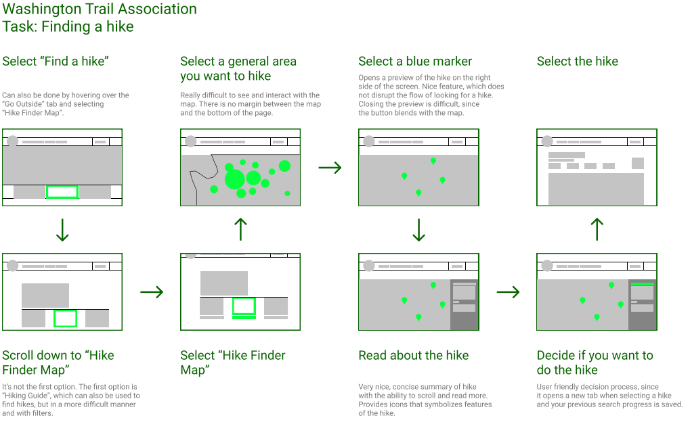
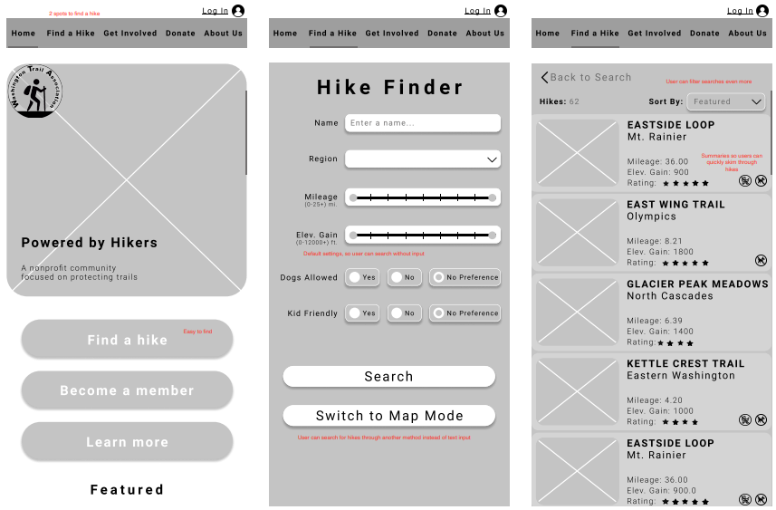
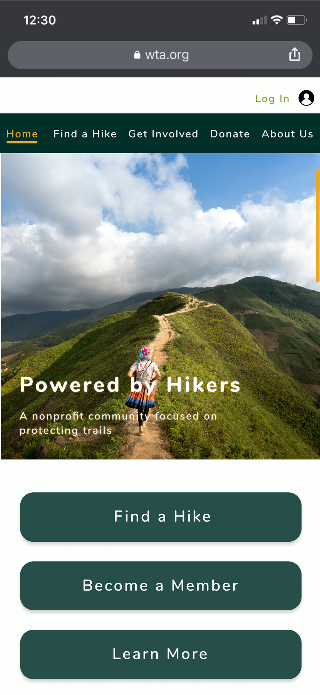
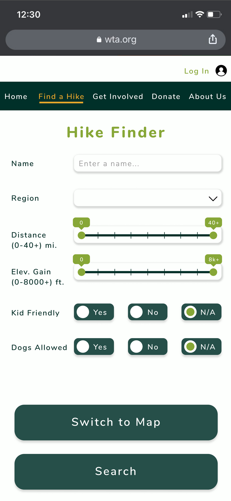
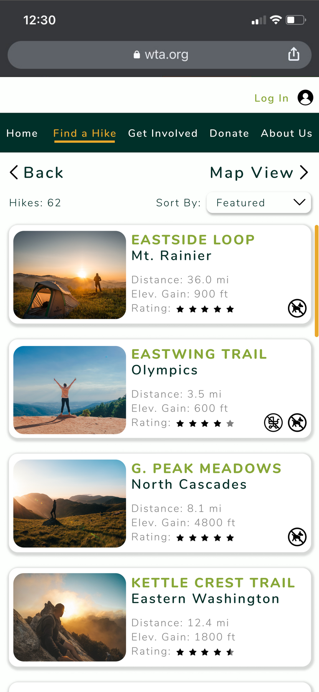

The problem
I went through the current mobile site and found four big issues. Searching took too many steps, the "find a hike" feature was hard to find, the map was hard to use, and you had to read through each hike one at a time.
The primary audience was hikers. The secondary audience was anyone looking for hiking info.

Design
My wireframes shortened the search path, put a big "Find a hike" button on the home page, and grouped buttons using proximity and order. I leaned on Fitts's law and Hick's law to cut down on friction.
- Search: clear fields and a toggle to switch to the map.
- Results: hikes condensed onto one screen with short summaries and icons.
- Visual system: drop shadows to show what's tappable, and a palette that feels friendly, natural, and community-focused.




The new flow in high fidelity
Brand book
I finished with a brand book covering the logo, colors, type, and the mobile flow. The goal was to turn WTA's mission of getting people out into nature into a visual identity.